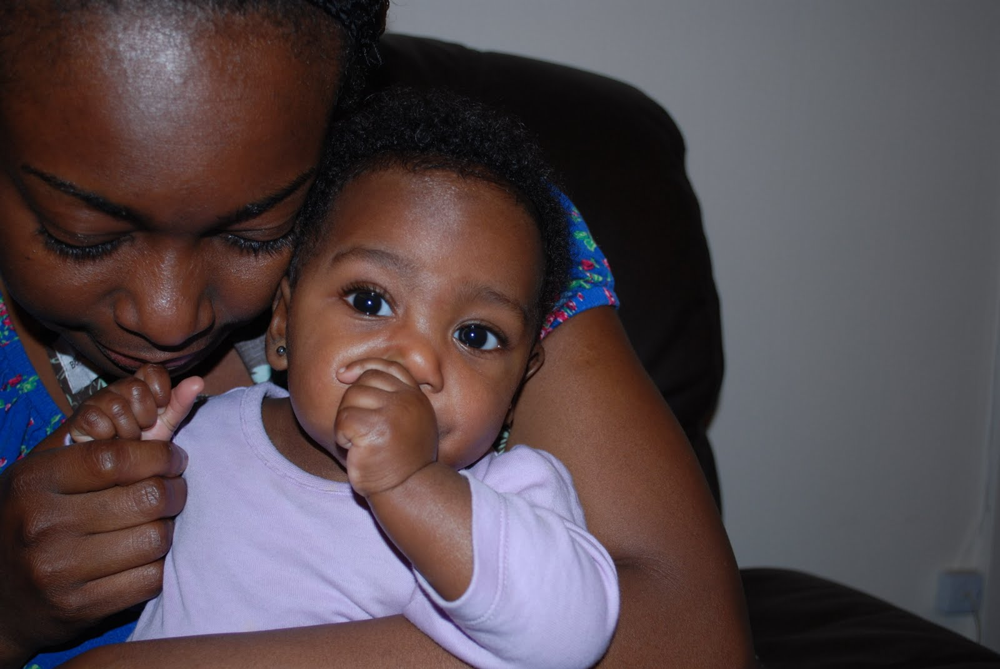
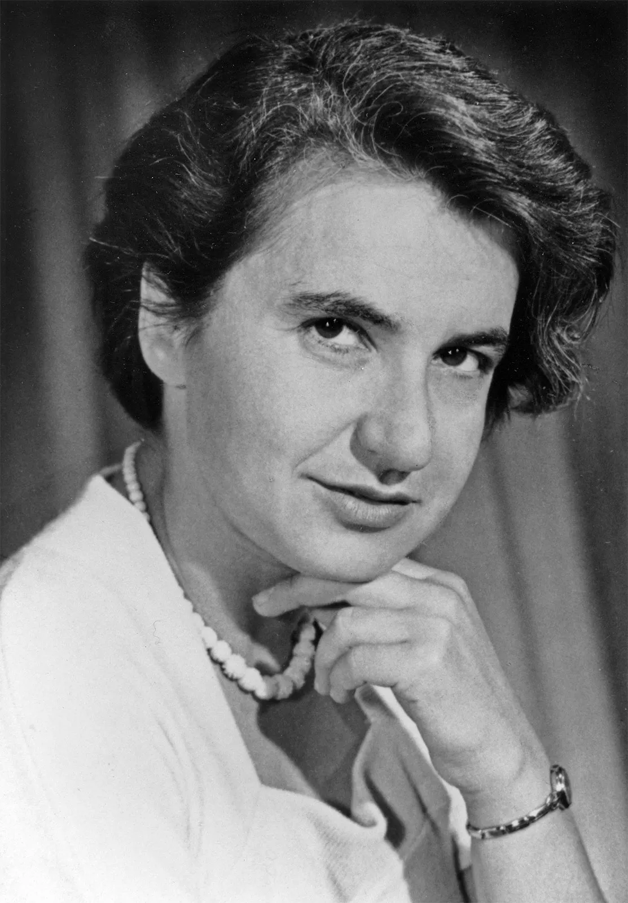

Ada Lovelace: Considered the first computer programmer.

Annie Easly: Pioneering computer scientist and mathematician.

Chien-Shiung Wu: Physicist known for her work in beta decay.

Grace Hopper: Computer programmer and naval officer.

Jane Goodall: Primatologist and conservationist.

Katherine Johnson: Mathematician and NASA space scientist.

Mae C. Jemison: Engineer and astronaut.

Marie Curie: Physicist and chemist, Nobel Prize winner.

Mum: Me and my loving mother.

Patricia Bath: Ophthalmologist and inventor.

Rosalind Franklin: Chemist and X-ray crystallographer.